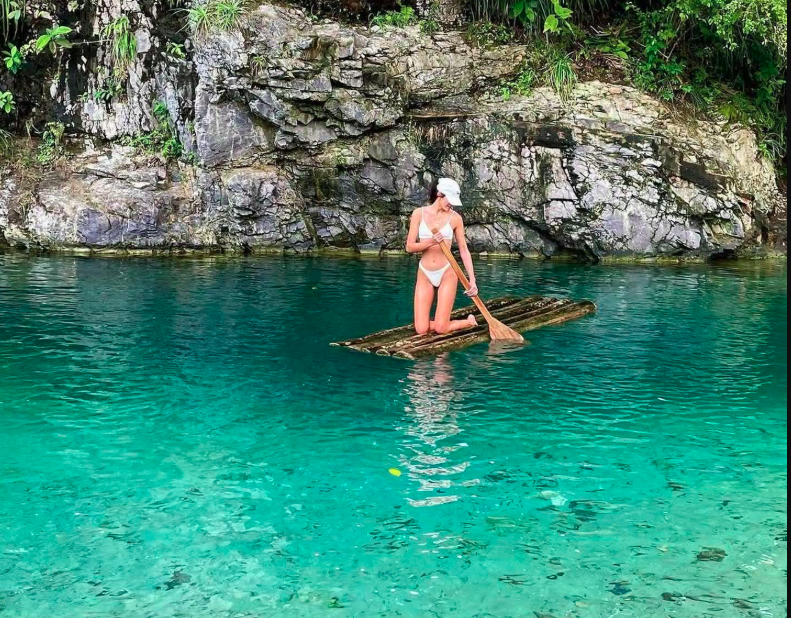

01 · SALUD Y RELAJACIÓN
Pozas Agua y Sal
Las Pozas Turquesas de Agua Salada se ubican en el sector Bajo Chancarizo, a 10 km del centro de Pozuzo (Oxapampa, Pasco). Estas aguas de manantial ricas en sal y azufre son famosas por su color turquesa, sus propiedades relajantes y curativas.
AGUAS MEDICINALES